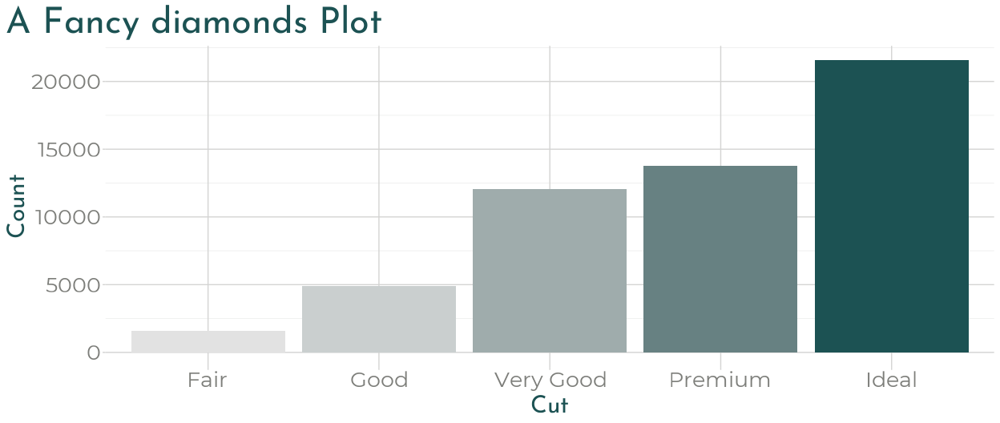

Give your xaringan slides some style with xaringanthemer within your slides.Rmd file without (much) CSS.

Installation
You can install xaringanthemer from CRAN
install.packages("xaringanthemer")or you can install the development version of xaringanthemer from GitHub.
# install.packages("remotes")
remotes::install_github("gadenbuie/xaringanthemer")Quick Intro
First, add the xaringan-themer.css file to the YAML header of your xaringan slides.
Then, in a hidden chunk just after the knitr setup chunk, load xaringanthemer and try one of the theme functions.
```{r xaringan-themer, include=FALSE, warning=FALSE}
library(xaringanthemer)
style_mono_accent(
base_color = "#1c5253",
header_font_google = google_font("Josefin Sans"),
text_font_google = google_font("Montserrat", "300", "300i"),
code_font_google = google_font("Fira Mono")
)
```
Matching ggplot Themes
xaringanthemer even provides a ggplot2 theme with theme_xaringan() that uses the colors and fonts from your slide theme. Built on the showtext package, and designed to work seamlessly with Google Fonts.
Color and fill scales are also provided for matching sequential color scales based on the primary color used in your slides. See ?scale_xaringan for more details.
More details and examples can be found in vignette("ggplot2-themes").
library(ggplot2)
ggplot(diamonds) +
aes(cut, fill = cut) +
geom_bar(show.legend = FALSE) +
labs(
x = "Cut",
y = "Count",
title = "A Fancy diamonds Plot"
) +
theme_xaringan(background_color = "#FFFFFF") +
scale_xaringan_fill_discrete()
Tab Completion
xaringanthemer is Tab friendly – use autocomplete to explore the template variables that you can adjust in each of the themes!


Features
There’s a lot more that xaringanthemer can do! Discover xaringanthemer’s features.